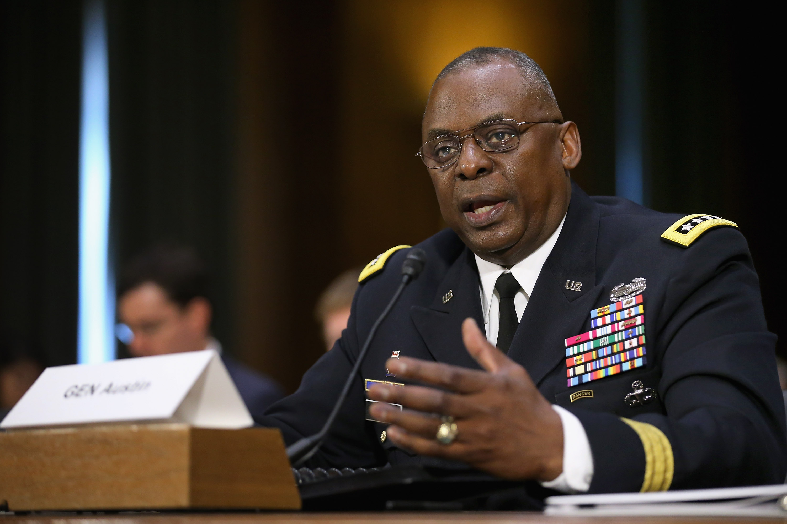

TOP STORY

U.S.
Biden's Pick for Defense Secretary Expected to Face Bipartisan Opposition
The rule about the waiver was established over fears that a former general might be too familiar with soldiers still in active duty.